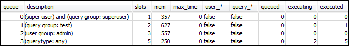
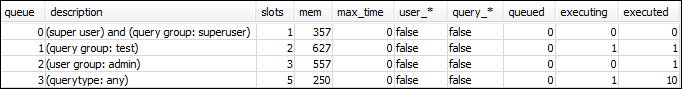

セクション 3: ユーザーグループとクエリグループに基づいてクエリをキューにルーティング
クラスターを新しいパラメータグループに関連付けて WLM を設定しました。次に、いくつかのクエリを実行して Amazon Redshift がどのようにクエリをキューにルーティングして処理するかを確認します。
ステップ 1: データベースのクエリキュー設定を表示する
まず、データベースに WLM が正常に設定されていることを確認します。
クエリキュー設定を表示するには
-
RSQL を開き、次のクエリを実行します。クエリは「ステップ 1: WLM_QUEUE_STATE_VW ビューを作成する」で作成した WLM_QUEUE_STATE_VW ビューを使用します。クラスターを再起動する前にセッションをデータベースに接続済みである場合は、再接続する必要があります。
select * from wlm_queue_state_vw;結果の例は次のとおりです。

この結果を、「ステップ 1: WLM_QUEUE_STATE_VW ビューを作成する」で受け取った結果と比較します。キューが 2 つ追加されていることがわかります。キュー 1 は test クエリグループのキューになり、キュー 2 は admin ユーザーグループのキューになっています。
キュー 3 はデフォルトキューになっています。リストの最後のキューは常にデフォルトキューです。これは、クエリでユーザーグループやクエリグループが指定されていない場合、デフォルトでクエリがルーティングされる先のキューです。
-
次のクエリを実行して、クエリがキュー 3 で実行されることを確認します。
select * from wlm_query_state_vw;結果の例は次のとおりです。

ステップ 2: クエリグループキューを使ってクエリを実行する
クエリグループキューを使ってクエリを実行するには
-
次のクエリを実行して、クエリを
testクエリグループにルーティングします。set query_group to test; select avg(l.priceperticket*s.qtysold) from listing l, sales s where l.listid <40000; -
他の RSQL ウィンドウから、次のクエリを実行します。
select * from wlm_query_state_vw;結果の例は次のとおりです。

クエリは、test クエリグループ (今はキュー 1) にルーティングされました。
-
キューの状態表示ですべてを選択します。
select * from wlm_queue_state_vw;次のような結果が表示されます。

-
今度は、クエリグループをリセットして、実行時間が長いクエリを再び実行します。
reset query_group; select avg(l.priceperticket*s.qtysold) from listing l, sales s where l.listid <40000; -
ビューに対するクエリを実行して、結果を確認します。
select * from wlm_queue_state_vw; select * from wlm_query_state_vw;結果の例は次のとおりです。

結果として、クエリが今は再びキュー 3 で実行されています。
ステップ 3: データベースユーザーとグループを作成する
このキューでクエリを実行する前に、データベースにユーザーグループを作成して、このユーザーグループにユーザーを追加する必要があります。次に、新しいユーザーの認証情報を使って RSQL にログインして、クエリを実行します。データベースユーザーを作成するには、管理ユーザーのようなスーパーユーザーとしてクエリを実行する必要があります。
新しいデータベースユーザーとユーザーグループを作成するには
-
RSQL ウィンドウで次のコマンドを実行して、データベースに
adminwlmという名前の新しいデータベースユーザーを作成します。create user adminwlm createuser password '123Admin'; -
続いて、次のコマンドを実行して、新しいユーザーグループを作成し、新しい
adminwlmユーザーをそのユーザーグループに追加します。create group admin; alter group admin add user adminwlm;
ステップ 4: ユーザーグループキューを使ってクエリを実行する
次に、クエリを実行し、それをユーザーグループキューにルーティングします。これを行うのは、実行するクエリのタイプを処理するように設定されたキューにクエリをルーティングする場合です。
ユーザーグループキューを使ってクエリを実行するには
-
RSQL ウィンドウ 2 で、次のクエリを実行して、
adminwlmアカウントに切り替え、そのユーザーとしてクエリを実行します。set session authorization 'adminwlm'; select avg(l.priceperticket*s.qtysold) from listing l, sales s where l.listid <40000; -
RSQL ウィンドウ 1 で、次のクエリを実行して、クエリがルーティングされるクエリキューを確認します。
select * from wlm_query_state_vw; select * from wlm_queue_state_vw;結果の例は次のとおりです。


このクエリが実行されたキューはキュー 2 (
adminユーザーキュー) です。このユーザーとしてログインしてクエリを実行すると、別のクエリグループを指定しない限り、クエリは常にキュー 2 で実行されます。選択されるキューは、キューの割り当てルールによって異なります。詳細については、「WLM キュー割り当てルール」を参照してください。 -
次に、RSQL ウィンドウ 2.から次のクエリを実行します。
set query_group to test; select avg(l.priceperticket*s.qtysold) from listing l, sales s where l.listid <40000; -
RSQL ウィンドウ 1 で、次のクエリを実行して、クエリがルーティングされるクエリキューを確認します。
select * from wlm_queue_state_vw; select * from wlm_query_state_vw;結果の例は次のとおりです。

-
処理が完了したら、クエリグループをリセットします。
reset query_group;